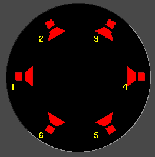

| [ << ] | [ >> ] | [Top] | [Contents] | [Index] | [ ? ] |
When you play media files in Cinelerra, the media files have a certain number of tracks, a certain frame size, a certain sample size, and so on and so forth. No matter what attributes the media file has, it is played back according to the project attributes. So, if an audio file's sample rate is different than the project attributes, it is resampled. In like fashion, if a video file's frame size is different than the project attributes, the video is composited on a black frame, either cropped or bordered with black.
The project attributes are adjusted in Settings->Set Format and to a lesser extent in File->New. When you adjust project settings in File->New, a new, empty timeline is created. Every timeline created from this point on uses the same settings. When you adjust settings in Settings->Format, media on the timeline is left unchanged. Also, every timeline created from this point uses the same settings.
Set Format window
In addition to the traditional settings for sample rate, frame rate, frame size, Cinelerra uses some unusual settings like channel positions, color model, and aspect ratio.
Select an option from this menu to have all the project settings set to one of the known standards.
Sets the number of audio tracks for the new project. Tracks can be added or deleted later, but options are provided here for convenience.

The channel position widget
The channels are numbered. When rendered, the output from channel 1 is rendered to the first output track in the file or the first soundcard channel of the soundcard. Later channels are rendered to output tracks numbered consecutively.
The audio channel positions correspond to where in the panning widgets each of the audio outputs is located. The closer the panning position is to one of the audio outputs, the more signal that speaker gets. Click on a speaker icon and drag to change the audio channel location.
The speakers can be in any orientation. A different speaker arrangement is stored for every number of audio channels since normally you do not want the same speaker arrangement for different numbers of channels.
Channel positions is the only setting that does not affect the output necessarily. It is merely a convenience, so that when more than two channels are used, the pan controls on the timeline can distinguish between them. It has nothing to do with the actual arrangement of speakers.
Different channels can be positioned very close together to make them have the same output.
See section Panning audio tracks.
In order to do effects which involve alpha channels, a colormodel with an
alpha channel must be selected. These are RGBA8888, YUVA8888, and RGBA Float.
The 4 channel colormodels are slower than 3 channel colormodels,
with the slowest being RGBA Float. Some effects, like fade, work around the
need for alpha channels while other effects, like chromakey, require an alpha
channel to do anything, so it is a good idea to try the effect without alpha
channels to see if it works before settling on an alpha channel and slowing it
down.
When using compressed footage, YUV colormodels are usually faster than RGB colormodels.
They also destroy fewer colors than RGB colormodels. If
footage stored as JPEG or MPEG is processed many times in RGB, the colors will
fade whereas they will not fade if processed in YUV.
Years of working with high dynamic range footage have shown floating point RGB
to be the best format for high dynamic range. 16 bit integers were used
in the past and were too lossy and slow for the amount of improvement.
RGB float does not destroy information when used with YUV source footage and
also supports brightness above 100%. Be aware that some effects, like
Histogram, still clip above 100% when in floating point.
| [ << ] | [ >> ] | [Top] | [Contents] | [Index] | [ ? ] |
This document was generated on February, 11 2016 using texi2html 1.76.